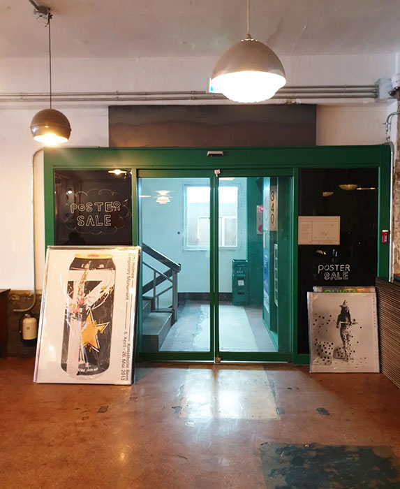
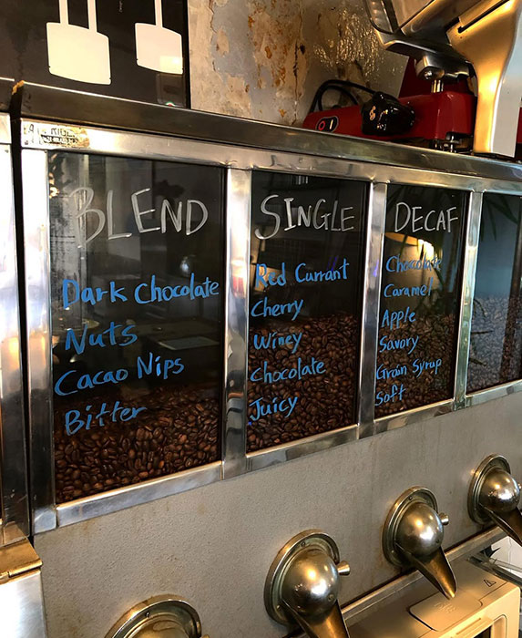
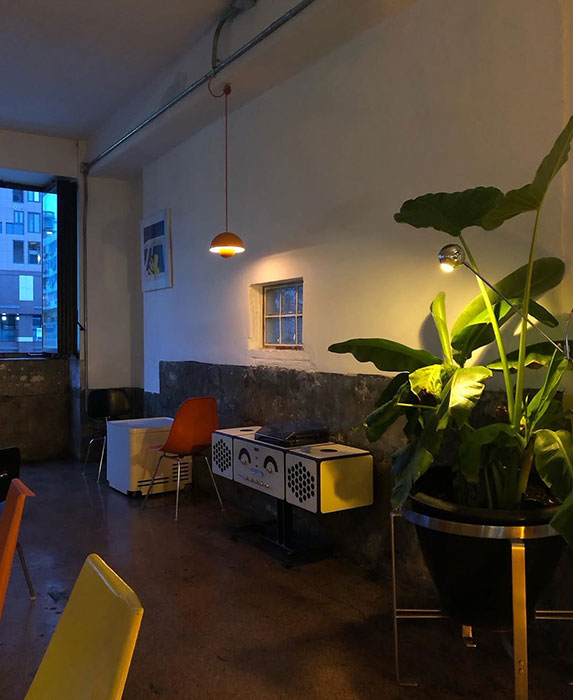

ANGLE340의 시작
을지로에서 시작된 특별한 시선
2019년 4월, 앵글340은 낡은 간판과 공구상점이
어우러진 을지로 골목에 문을 열었습니다.
낯익지만 새로운 시선으로 공간을 바라보며, 익숙한 거리의 정서를 현대적으로 해석한 카페로 출발했습니다.

기술과 정성으로의 완성
장비와 노하우가 만드는 커피의 깊이
라마르조꼬 KB90, 미토스원 등 최고급 장비와 헤드 바리스타 문용진의 오랜 노하우가 더해져 앵글340만의 커피가 완성됩니다.
‘크림라떼’와
‘청계천라떼’ '바다라떼'와 '베이글라떼' 같은 시그니처
메뉴는 단골들의 꾸준한 사랑을 받아왔습니다.



공간과 감성을 담은 카페
쌓인 시간, 담긴 감성
커피 한 잔에서 출발한 감각은 이제 공간 구성, 분위기
그리고 서비스 전반에 녹아 있습니다.
앵글340은 단순한 카페를 넘어, 오래된 감성과 새로운
경험이 공존하는 공간으로 자리 잡았습니다.